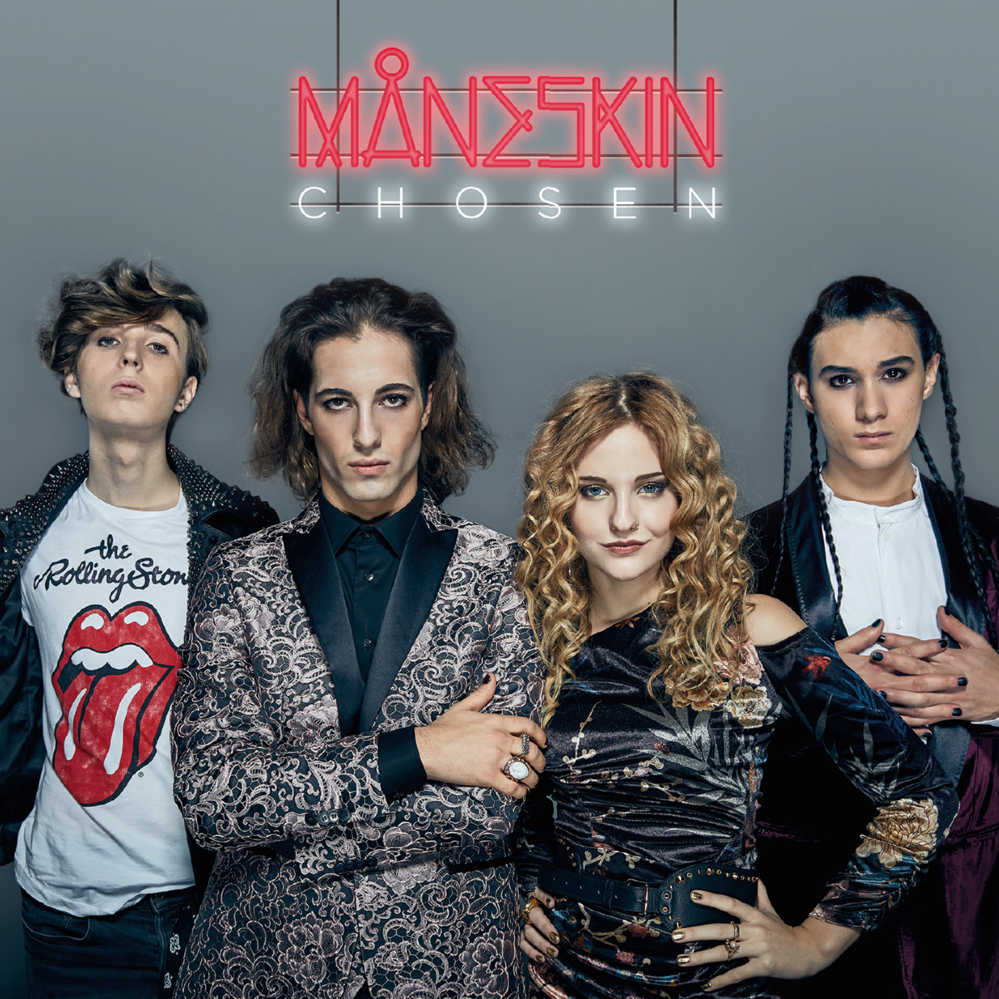

About the band Maneskin
This rock band was formed in 2016 by members from Rome, Italy. In other words, an Italian rock band. The band name means "moonlight" in Danish. They are known for their very energetic and powerful stage performances, especially vocalist Damiano David's powerful voice and charisma.
Why I got hooked on Maneskin
I was first introduced to the band Maneskin through the song Beggin. The song was very popular overseas at the time, and I loved the strong voice and guitar intro, so I started listening to it. I want to share the beauty of this song with you.
Maneskin songs I recommend

Beggin'" was featured on "Teatro d'ira - Vol. 1," and it attracted a great deal of attention. The beauty of "Beggin'" lies in its energetic performance, vocals, and unique arrangement. Maneskin vocalist Damiano's powerful voice and passionate performance leave a strong impression on the listener.

Gossip" is a song from the album "Teatro d'ira: Vol. I" by Maneskin. The lyrics are sung about rumors and innuendos, conveying a message against falsehoods and negative words that occur in society. Because of its passionate energy and message, "Gossip" has become a very popular song among fans

Honey" is a song from the album "Il ballo della vita" by Maneskin. This song is a single released on September 1, 2023, with a very pleasant chorus; it is a great song.